Proposition 47 removes some felonies from your record
Take the first step.
Submit a request with the court in 10 minutes.
Change your record

GetProp47.org is a free, non-profit service for California residents